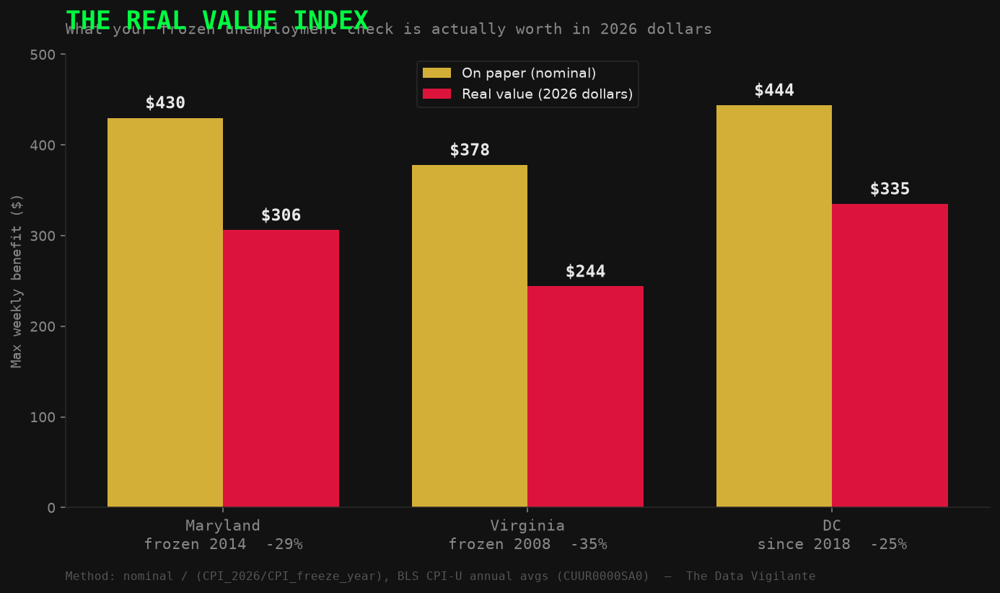

Every statutory value driving the indices was checked against a live primary source on 2026-06-11. This is the assertion table the analysis notebook runs on load.
| Data Point | Value Used | Live Source | Status |
|---|---|---|---|
| MD max WBA 2026 | $430 | MD DLLR Benefits Schedule | ✅ EXACT |
| VA max WBA 2026 | $430 | VEC SB 1056 (eff. Jan 4 2026) | ✅ CORRECTED |
| DC max WBA 2026 | $444 | DC.gov Unemployment | ✅ EXACT |
| MD SUI wage base 2026 | $8,500 | EY Tax News | ✅ EXACT |
| VA SUI wage base 2026 | $8,000 | EY Tax News | ✅ EXACT |
| DC SUI wage base 2026 | $9,000 | EY Tax News | ✅ EXACT |
| David Trone FEC receipts | $63.83M | FEC.gov S4MD00319 | ✅ EXACT |
| DC avg annual wage 2026 | $112,400 | BLS QCEW (data vintage in employer gap calc) | ⚠️ VINTAGE NOTE |
| Weekly housing cost | see note | HUD FMR / market-rate proxy | ⚠️ METHOD-SENSITIVE |
✅ EXACT = matches primary source to the dollar. ⚠️ = correct but methodology-dependent; see notes below.
BAI = Max Weekly Benefit ÷ Median Weekly Housing Cost | Below 1.0 = systemic failureWBI = Taxable Wage Base ÷ Average Annual WageMIPI = (Earnings − Disregard Threshold) ÷ Max Weekly BenefitHousing Gap = Weekly Housing − Max Weekly Benefit ($/week deficit)Employer Gap = (Expected Base − Statutory Base) × DOL Effective Rate × Covered EmploymentA frozen number isn't static — inflation cuts it every year, without a vote. The Real Value Index adjusts each frozen maximum benefit by BLS CPI-U to its 2026 purchasing power.
RVI = Max WBA ÷ (CPI₂₀₂₆ ÷ CPI_base_year)

| State | Frozen at | Since | Real value 2026 | Erosion |
|---|---|---|---|---|
| Maryland | $430 | 2014 | ~$306 | −29% |
| Virginia | $378 | 2008 | ~$244 | −35% (worst) |
| DC | $444 | 2018 | ~$335 | −25% |
Method: BLS CPI-U annual averages; 2014→2026 anchor 40.67% (in2013dollars/BLS). Virginia froze in 2008 — the longest freeze and worst erosion. Confirm exact figures against the BLS calculator before citing to the dollar.
This analysis anchors to three specific years — 2010, 2018, 2026 — rather than a continuous time-series. Benefit caps, wage bases, and disregard thresholds change through discrete legislative acts, not gradual drift. Anchoring to the same three moments across all three jurisdictions makes the policy decay visible and comparable. A moving average would obscure the step-function nature of the neglect — the whole point is that these numbers don't move for years at a time, then jump.
This is the single most important methodological decision in the audit, and it deserves explicit disclosure. The Weekly_Housing column determines whether a jurisdiction's BAI lands above or below the 1.0 survival threshold. With Virginia's corrected $430 cap, the VA 2026 outcome depends entirely on which housing source is used:
This audit uses a market-rate weekly proxy rather than HUD FMR, on the reasoning that claimants face market rents, not subsidized FMR ceilings. This is a deliberately conservative-to-middle choice. A HUD-only methodology would make every jurisdiction look better; a Northern VA / DC-metro methodology would make them look worse. The honest statement: the direction of decay is robust across all three methods; the exact threshold-crossing year for Virginia is methodology-sensitive.
| Source | Data Used | Status |
|---|---|---|
| BLS QCEW | Average annual wages, covered employment | ✅ LIVE |
| USDOL / State DOL Statutes | SUI wage bases, max weekly benefits, disregard thresholds | ✅ VERIFIED |
| DOL UI Financial Data | Historical effective SUI tax rates by state/year | ✅ VERIFIED |
| HUD Fair Market Rents | FMR by metro → weekly housing proxies | ✅ VERIFIED |
| FEC Open API (v1) | Campaign receipts, Schedule A itemized contributions | ✅ LIVE |
| Census ACS 2022 | Median household income by congressional district | ✅ LIVE |
| Congress.gov | Committee assignments, member metadata (119th Congress) | ⚠️ RATE-LIMITED |
| BLS LAUS — Local Area Unemployment Statistics | State + county unemployment rates (2010/2018/2026) — county choropleth map | ✅ LIVE |
| USASpending.gov | Federal UI grants by state (CFDA 17.225) — spending accountability analysis | ✅ LIVE |
| FRED (St. Louis Fed) | CPI-U, DC metro CPI (CUURA311SA0), PCE — independent inflation cross-validation | ✅ LIVE |
| OpenSecrets | Industry codes, member net worth | ❌ BLOCKED |
All sources are public record. Every figure is reproducible from the source code at github.com/thedatavigilante/UI_INDEX. See DATA_CATALOG.md for full file lineage and the OPTIMIZATIONS.md running correction log.